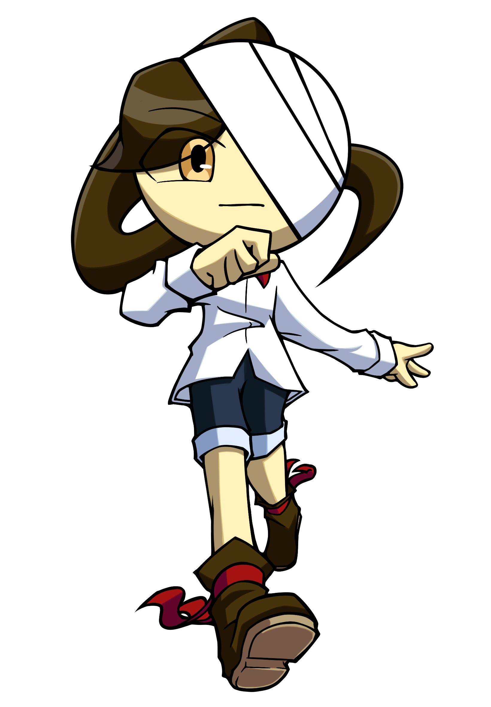
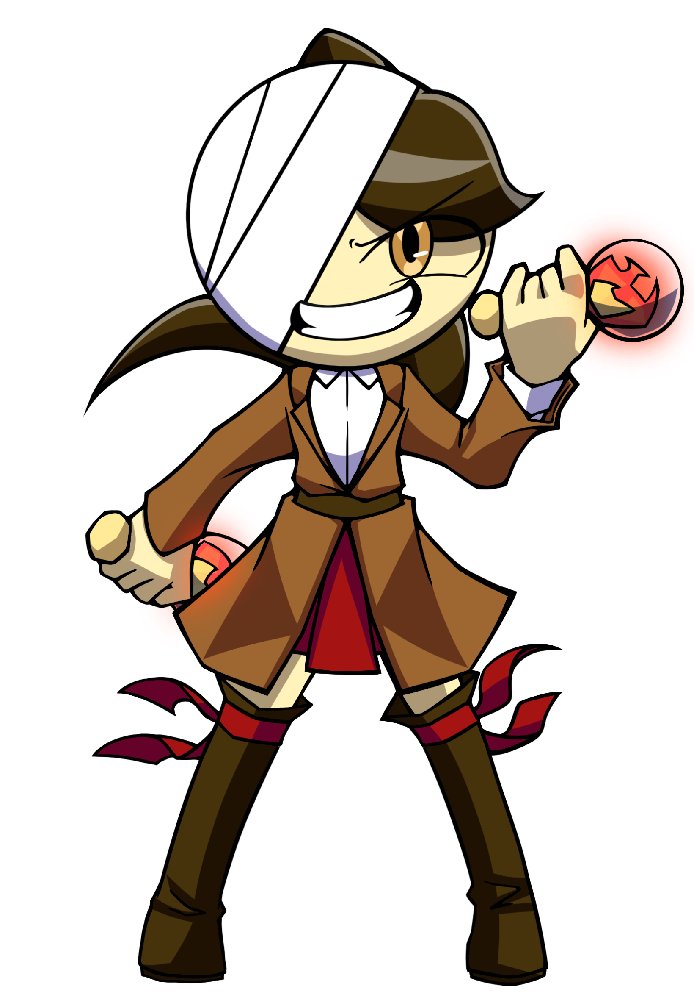
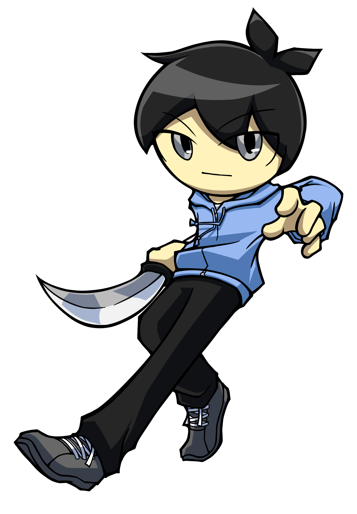
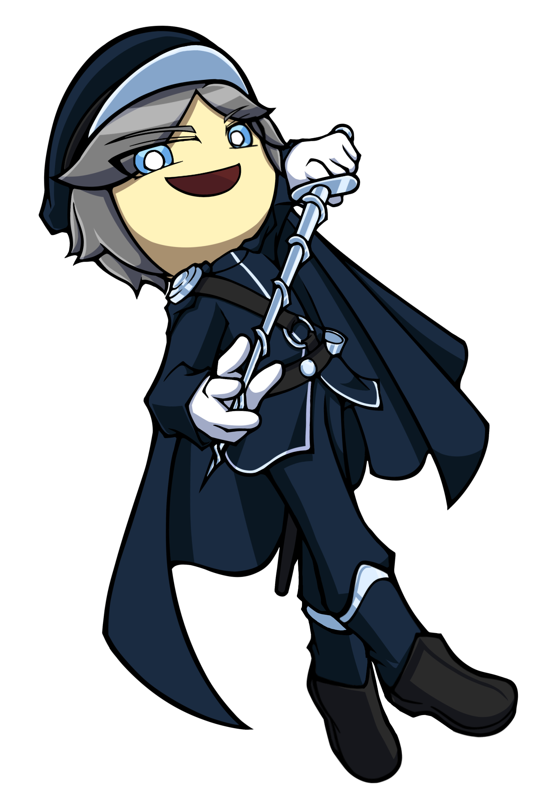

メインキャラ

おんぷ
Nightbellの主人公。記憶と感情を失くしている。喋ることができない。この世界の外にあるはずの自分の居場所に帰るため、様々な場所を冒険する。

うらのおんぷ
おんぷをもとに造られた、おんぷの偽物。愛称はうらっぷ。初めは彼女に成り代わろうとしたが、今は尊敬していて仲良し。前向きで無鉄砲。

フィア
生活のためにおんぷたちと冒険を共にしている少年。真面目でしっかりもののツッコミ役。面倒見がよく他人を放っておけないリーダー気質の持ち主。

ルクス
若くしてとある研究所の看守長をやっている。楽観的な自信家で自分の容姿、剣術ともに誇りを持っているナルシスト。外での世界や冒険を夢見ている。